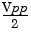

VOLTage:OFFSet {<offset>|MINimum|MAXimum}
VOLTage:OFFSet? [MINimum|MAXimum]
Set the dc offset voltage. The default offset is 0 volts for all functions. MIN selects the most negative dc offset voltage for the selected function and amplitude. MAX selects the largest dc offset for the selected function and amplitude. The :OFFS? query returns the offset voltage for the function currently selected.
· Limits Due to Amplitude: The relationship between offset voltage and output amplitude is shown below. Vmax is the maximum peak voltage for the selected output termination (5 volts for a 50W load or 10 volts for a high-impedance load).
|Voffset| < Vmax - 
If the specified offset voltage is not valid, the function generator will automatically adjust it to the maximum dc voltage allowed with the amplitude specified. From the remote interface, a "Data out of range" error will be generated and the offset will be adjusted as described.
· Limits Due to Output Termination
: The offset limits are determined by the current output termination setting. For example, if you set the offset to 100 mVdc and then change the output termination from 50 ohms to "high impedance", the offset voltage displayed on the function generator's front-panel will double
to 200 mVdc (and no error will be generated). If you change from "high impedance" to 50 ohms, the displayed offset will drop in half. See the
OUTP:LOAD command on page
163 for more information.
· Arbitrary Waveform Limitations: For arbitrary waveforms, the maximum offset and amplitude will be limited if the waveform data points do not span the full range of the output DAC (Digital-to-Analog Converter). For example, the built-in "Sinc" waveform does not use the full range of values between ±1 and therefore its maximum offset is limited to 4.95 volts (into 50 ohms).
· You can also set the offset by specifying a high level and low level. For example, if you set the high level to +2 volts and the low level to
-3 volts, the resulting amplitude is 5 Vpp (with an associated offset voltage of -500 mV). See the VOLT:HIGH and VOLT:LOW commands below for more information.
· To output a dc voltage level, select the dc voltage function using the FUNC DC command and then set the offset voltage level using the VOLT:OFFS command. You can set the dc level to any value between ±5 Vdc into 50 ohms or ±10 Vdc into an open circuit.